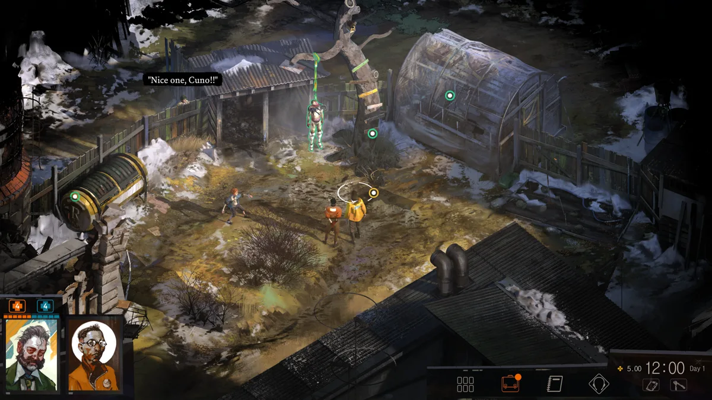
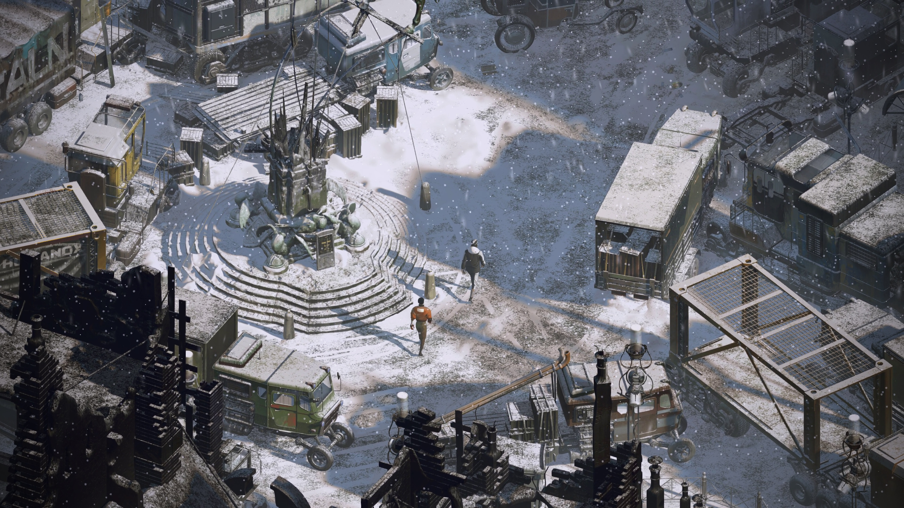
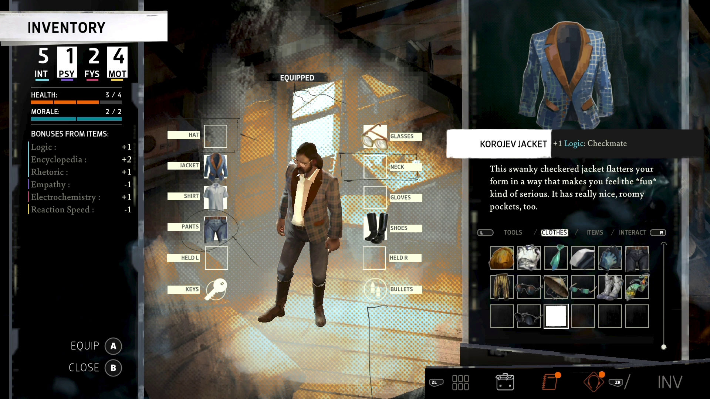
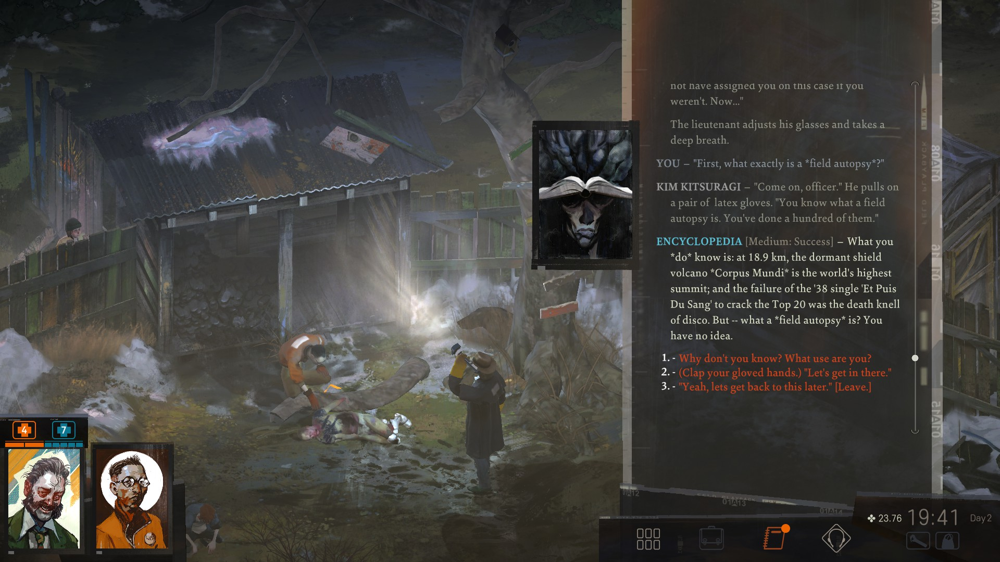

Hace ya un tiempo, un amigo me recomendó un juego que según él, era imprescindible que lo jugara. Se trata de Disco Elysium, una aventura narrativa con elementos RPG en la que juegas como un detective que además de resolver un crimen, debe lidiar con su salud mental. No es el tipo de juegos que suelo disfrutar, por lo que al principio me opuse un poco a la idea. Sin embargo, me fijé en cómo la gente hablaba muy positivamente sobre su narrativa y diseño, y decidí adentrarme en esta experiencia.
El juego
Disco Elysium es un juego RPG que en vez de optar por mecánicas de combate tradicionales, se enfoca mucho más en los diálogos. No siempre hablarás con otras personas, sino que en ocasiones tendrás conversaciones con distintas partes de tu psique. Juegas como un detective en decadencia afectado por amnesia, con la tarea de resolver un asesinato en la ciudad de Revachol.
Dentro del sistema de diálogos del juego se pueden diferenciar tres partes claras: los árboles de diálogo, las pruebas de habilidades o skill checks y el sistema de "Gabinete de pensamientos", que te permite internalizar filosofías e ideas que cambian cómo interactúa tu personaje con el mundo. Cada elección que tomas es significativa, llevando a una narrativa que evoluciona completamente en función de tus acciones y personalidad.
Accesibilidad
Es cierto que Disco Elysium se trata de un juego complejo y profundo, pero aún así consigue dar la bienvenida a un gran grupo de jugadores debido a la simplicidad de sus controles. Podemos mover a nuestro personaje utilizando el ratón y haciendo clic en el lugar donde queremos que se mueva, similar a juegos como Fallout (1997). El sistema de diálogos también se puede manejar con el ratón o utilizando botones direccionales para navegar entre las distintas opciones, por lo que no presenta un reto a la hora de jugar.
Simple, y a su vez complejo
A primera vista, las mecánicas del juego parecen simples, ya que no hay enemigos que combatir ni mazmorras que explorar. En cambio, la complejidad surge en los diálogos, las interacciones de habilidades y los dilemas morales a los que nuestro protagonista se enfrenta. Las 24 habilidades de nuestro personaje, desde Drama hasta Lógica, actúan como voces en tu cabeza que compiten por tu atención y te empujan hacia diferentes caminos. La maestría no proviene de refinar habilidades mecánicas, sino de comprender y navegar esta intrincada red de conflictos internos.
Narrativa y worldbuilding
Revachol no es comparable a la mayoría de escenarios que nos podemos encontrar en un videojuego tradicional. Ha sido diseñado para contar una historia, y cada una de sus calles y edificios tiene un propósito. Algunas veces tienen relevancia en la trama que se desarrolla durante la partida, otras sirven para poner en contexto la situación socio-económica en la que se encuentran la ciudad y sus habitantes. Todos los detalles que los desarrolladores han incluido en este nivel ayuda a que Revachol se sienta como una ciudad que realmente podría haber existido.
Los personajes de este juego son un gran punto a favor en el que quiero hacer hincapié. El primero al que conoces es tu compañero, el estóico Kim Kitsuragi, que te ayudará a lo largo de tu aventura. Durante la historia conocerás a un montón de personajes más, cada uno con sus historias y motivaciones que los hacen sentir auténticos. Algunos encajarán mejor que otros con tu personaje dependiendo de las decisiones que tomes en conversación.
Jugabilidad
Disco Elysium se estructura en torno a bucles narrativos: investigar pistas, conversar con personajes y manejar la frágil psique de tu detective. Los fracasos no son retrocesos, sino oportunidades para que la historia evolucione de formas inesperadas. Esta ausencia de un estado de "game over" mantiene a los jugadores involucrados, sabiendo que cada fallo revela algo nuevo sobre el mundo o su personaje.
Autodescubrimiento
Un tema bastante presente en Disco Elysium es el de autodescubrimiento. Como se ha dicho anteriormente, el juego te pone en situaciones en las que conversarás con partes de tu psique, e incluso podrás subirlas de nivel para tener mejor suerte en aquellas pruebas de habilidad que requieran de esa parte. A lo largo de la historia verás como reaccionan estas partes de tu mente a las distintas situaciones que surgen, y deberás tomar las decisiones que veas apropiadas para no perder la cordura mental y avanzar la historia. Es importante tener en cuenta que el juego no entiende de una decisión "correcta", cada uno de los caminos cambiará la personalidad de tu detective y su entorno.
Conclusión
Disco Elysium es un juego que rompe por completo los esquemas de lo que es una aventura narrativa, por lo que puedo decir con certeza que no se trata solo de un juego sino una experiencia. Una vez termines el juego, te encontrarás pensando sobre las decisiones que has tomado a lo largo de la historia y aquellas circunstancias que el protagonista no puede controlar pero que aún así afectan a su vida. Si eres alguien que disfruta con una historia profunda y no está buscando un juego con acción intensa y constante, esta es una buena elección.